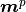
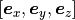
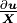

structure¶
In this page, some formulations are provided used in structure.py file.
Hexagonal Structure¶
set parent¶
Parent lattice can be defined by specific twin mode. By this, the following properties are determined.
twin indices
shear strain functoin
parent matrix
where parent matrix is constructed as bellow
where , and are a little bit different from the ones in ‘get_twin_indices’ in twinmode.py because they are rescaled to be the vectors whose element are all minimum integers. Therefore, every element of supercell matrix is integer. The fractional points is transformed to as
shear structure¶
Shear structure here means the structure which is sheared from parent to twin structure. Let the bases of shear and twin structure is defined as . Then
where
where  is shear ratio.
Let fractional points in this shear lattice be
is shear ratio.
Let fractional points in this shear lattice be  ,
,
The shear value  is determined as below.
From the figure, shear vector from parent to twin
is
is determined as below.
From the figure, shear vector from parent to twin
is
so
where  is the distance of the point
is the distance of the point  from plane.
The bases of twin structure
corresponds to .
from plane.
The bases of twin structure
corresponds to .
The fractional positions are unfixed during this transformation from parent structure to shear and twin structure.
Let the bases of the primitive structure of the shear as can be written as
Let fractional points in this primitive shear lattice be ,
twinboundary structure¶
For constructing twinboudnary structure, crystal body rotation is taken place. In this step, the cartesian basis vectors from  to where . In this step, rotation matrix is defined as
is orthogonal matrix.
Therefore, lattice points and atom positions are rotated as
is orthogonal matrix
Parent lattice and twin lattice can be calculated in this rotated crystal body as
and
parent atom cartesian atom positions and twin atom cartesian atom positions in the rotated crystal body is
and
OLD¶
First, supercell matrix is constructed as bellow
where , and are a little bit different from the ones in ‘get_twin_indices’ in twinmode.py because they are rescaled to be the vectors whose element are all integer. Therefore, every element of supercell matrix is integer. In this step, the positions of the lattice points in the original hexagonal lattice and the relative positions of the atoms from each lattice point are defined in basis where
so
In the next step, the cartesian basis vectors from to where . In this step, rotation matrix is defined
![[\boldsymbol{e}_{\boldsymbol{m}^{p}},
\boldsymbol{e}_{\boldsymbol{\eta}^{p}_1},
\boldsymbol{e}_{\boldsymbol{k}^{p}_1}]
=
[\boldsymbol{e}_x, \boldsymbol{e}_y, \boldsymbol{e}_z]
\boldsymbol{R}](../_images/math/730fb2b1e252838e96ad908026bbd7d9432cff1b.png)
is orthogonal matrix.
When the number vectors are transformed to by this operation, the following relations hold.
so
Be careful if you use def pymatgen.core.structure.Structure.apply_operation, its input rotation matrix is , NOT .
In the last step, parent lattice is defined as
![[\boldsymbol{m}^{p},
\boldsymbol{\eta}^{p}_1,
\boldsymbol{\eta}^{p}_2]
=
[\boldsymbol{a}_1, \boldsymbol{a}_2, \boldsymbol{c}]
\boldsymbol{M}
=
[\boldsymbol{e}_x, \boldsymbol{e}_y, \boldsymbol{e}_z]
\boldsymbol{H} \boldsymbol{M}
=
[\boldsymbol{e}_{\boldsymbol{m}^{p}},
\boldsymbol{e}_{\boldsymbol{\eta}^{p}_1},
\boldsymbol{e}_{\boldsymbol{k}^{p}_1}]
\boldsymbol{R}^{-1} \boldsymbol{H} \boldsymbol{M}
\equiv
[\boldsymbol{e}_{\boldsymbol{m}^{p}},
\boldsymbol{e}_{\boldsymbol{\eta}^{p}_1},
\boldsymbol{e}_{\boldsymbol{k}^{p}_1}]
\boldsymbol{L}_p](../_images/math/10376634bd8682bdfdb300b36472dff43ac55ca4.png)
where
The coordinates of each points in basis such as and DOES NOT be affected by this transformation.
HOWEVER, may have to revise because two rigid atoms must be the nearest atoms from the specified plane. In the case you choose ‘c’ wyckoff letter, this revising (probably) always occur.
FUTURE EDITED¶
deformation gradient tensor¶
In the provious section, shear structure is introduced. Now, we can hold deformation gradient tensor from this shear. In general, deformation gradient tensor can be defined as
Shear strain corresponds to 
However, note this equation is on the basis of cartesian coordinate.
So we have to consider the matrix  on the same coordinate as
on the same coordinate as
So deformation gradient tensor can be defined as
and let material stretch tensor as , spatial stretch tensor as , rotaion as , right Cauchy-Green tensor as , left Cauchy-Green tensor as then
get_sheared_structure¶
When the shear ratio is , the basis vectors of sheared structure are given as
where  is given as
is given as
where
Therefore, sheared lattice is given as
where
where

get_twin_structure¶
The operation from parent lattice to twin lattice is defined as
where
In twin type , rotation matrix is given as

In twin type ,
rotation matrix  is given as
is given as
In both type, the following equation hold.
The relation between parent lattice and twin lattice is
so
where
By this transformation, number vectors in the basis of parent vectors (including and ) are not affected.
![[\boldsymbol{m}^{p},
\boldsymbol{\eta}^{p}_1,
\boldsymbol{\eta}^{p}_2]
\boldsymbol{X}^{p}
&=
[\boldsymbol{e}_{\boldsymbol{m}^{p}},
\boldsymbol{e}_{\boldsymbol{\eta}^{p}_1},
\boldsymbol{e}_{\boldsymbol{k}^{p}_1}]
\boldsymbol{L}^{p}
\boldsymbol{X}^{p} \\
&\longrightarrow
[\boldsymbol{e}_{\boldsymbol{m}^{p}},
\boldsymbol{e}_{\boldsymbol{\eta}^{p}_1},
\boldsymbol{e}_{\boldsymbol{k}^{p}_1}]
\boldsymbol{W}^{t}
\boldsymbol{L}^{p}
\boldsymbol{X}^{p} \\
&=
[\boldsymbol{m}^{t},
\boldsymbol{\eta}^{t}_1,
\boldsymbol{\eta}^{t}_2]
\boldsymbol{L}^{p,-1}
\boldsymbol{W}^{t,-1}
\boldsymbol{W}^{t}
\boldsymbol{L}^{p}
\boldsymbol{X}^{p} \\
&=
[\boldsymbol{m}^{t},
\boldsymbol{\eta}^{t}_1,
\boldsymbol{\eta}^{t}_2]
\boldsymbol{X}^{p}
\equiv
[\boldsymbol{m}^{t},
\boldsymbol{\eta}^{t}_1,
\boldsymbol{\eta}^{t}_2]
\boldsymbol{X}^{t}](../_images/math/c951e8ef1bbb4984731aa36550a09377cd83155a.png)
so number vectors in the basis of twin vectors (including and )
HexagonalTwinBoundary¶
__init__¶
To create ‘HexagonalTwinBoundary’ object, you have to specify the norm of a and c axis and its specie as a hexagonal metal information. Moreover, twinmode, twintype, dimension and x- y- shift respectively. If you set dimension equal ‘[1,1,2]’ and x-shift equal ‘1/2’, then parent and twin structures with its supecell as [1,1,2] and fix all the parent lattice point to -1/4 from its original points and fix all the twin lattice point to 1/4 from its original points. Then, dichromatic lattice is created.
In the case ‘dim=[1,1,1]’, dichromatic lattice becomes
After this, number vectors in the bases both parent and twin are transformed into the dichromatic lattice frame.
so
get_sheared_structure¶
The twin boundary structure can be sheared by this function. Input ‘gamma’ represents shear strain (). dichromatic lattice are sheared as

where
where